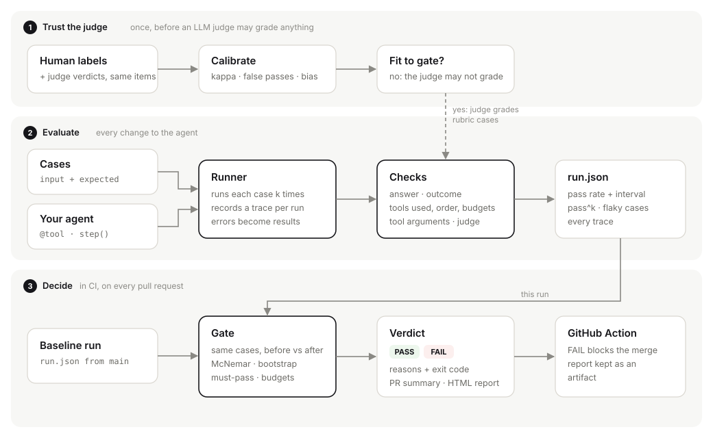

Know if your agent got worse before you merge.
holdline runs your agent's eval cases several times, checks what it did as well as what it said, measures your LLM judge against people, and fails the pull request when a change makes the agent measurably worse.
pip install holdlineA real report: helpdesk-agent with one answer sample, gated against its five-sample production setting. Open it and click any case to see its trace.
Most agent evals tell you less than you think.
Four ways a change slips through, and what holdline does about each.
Only the final answer is checked
An agent can reach the right answer the wrong way: skip the policy check, call a tool it must never call, or loop.
Check the path too
Required, forbidden and ordered tools, step budgets, loop detection and tool arguments validated against a schema.
Each case runs once
An agent that passes four times in five looks perfect today and broken tomorrow.
Run every case k times
pass^k, the chance all k runs pass, is the number that matters when the agent runs unattended. Flaky cases are named.
Nobody measured the judge
An LLM judge can be lenient exactly where it matters, and an average can hide a judge that is lenient on one kind of case and harsh on another.
Calibrate it against people first
Agreement beyond chance, false passes, and bias per group. A judge that is not fit is not allowed to grade.
"82% to 79%" might be noise
Two pass rates side by side cannot tell a regression from a bad day.
Compare the same cases, with statistics
Cases are paired before and after. An exact McNemar test on the ones that flipped, an interval on the change, and must-pass cases that never get a pass on statistics.
Three steps, each a plain file you can open.

1Trust the judge
Once, before an LLM judge grades anything, compare it with human labels on the same items.
2Evaluate
Run each case k times, record a trace of every tool and model call, grade each run, save run.json.
3Decide
In CI, compare this run with the one from main, case by case, and pass or fail the pull request with the reasons.
Proven on a real agent.
holdline over helpdesk-agent, a support agent that answers only from its help centre and escalates the rest: 68 labelled tickets, three runs each, gemini-2.5-flash, on 21 October 2026.
| 5 samples | 1 sample | |
|---|---|---|
| Pass rate | 95.6% | 96.1% |
| pass^3 | 95.6% | 95.6% |
| Escalated uncovered tickets | 100% | 100% |
| Answered covered tickets | 97.8% | 97.8% |
| Model calls per run | 4.4 | 1.69 |
Gate passed. 0 of 68 cases broke and none were fixed. The cheaper setting is not measurably worse on this suite, at 62% fewer model calls.
What the suite cannot see: escalation here comes from the agent's decide step, so the extra samples are never stressed. Borderline tickets come before shipping that change.
- A covered ticket was escalated"What is the member limit on the Free plan?" went to a human in all three runs. A real over-refusal.outcome: expected answer, got escalate
- The right answer, citing the wrong articleSCIM on the Business plan was answered correctly from the pricing article instead of the single sign-on one. An answer-only eval passes it.cites_gold_article: cited passage 11, gold article single-sign-on
- The grader was wrong, not the agent"Only the Owner can transfer ownership of a workspace." failed a token-overlap rule against the gold "the Owner". The reason to measure graders before trusting them.helpdesk_correct: answered 'Only the Owner can...', gold 'the Owner'
Measure the judge before it grades your releases.
- Agreement beyond chance. Cohen's kappa with an interval, because raw agreement looks high whenever most outputs pass.
- False passes first. A judge that passes what a person failed lets a regression ship.
- Bias per group. Here the overall bias is +0.01, which looks harmless, while the judge is lenient on short answers and harsh on multi-step ones. One threshold cannot fix that.
- Synthetic labels, made to show the failure mode. Open the report.
A decorator in your agent, one step in CI.
import holdline @holdline.tool def search(query: str) -> list: ... def agent(question: str) -> dict: hits = search(query=question) holdline.step("llm", "answer", question, hits) return {"outcome": "answer", "answer": ...} # outside a holdline run both are no-ops
# .github/workflows/agent-evals.yml - uses: Aashan47/holdline@v0.1.0 with: suite: evals/cases.jsonl target: my_agent:agent baseline: .holdline/baseline.json repeats: "3" max-drop: "0.05" # FAIL blocks the merge; the verdict lands in the job summary